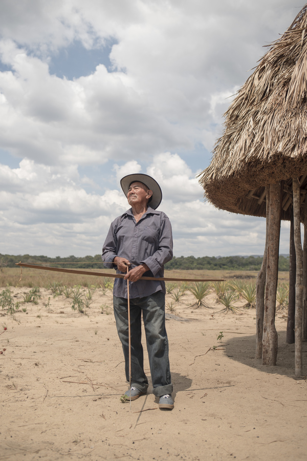

Depredación minera
frente a los ojos
del tepuy Roraima
Aunque oficialmente está fuera del Arco Minero del Orinoco, en más de 1.000 hectáreas del Parque Nacional Canaima también se busca oro. Indígenas de la Gran Sabana, forzados por la crisis humanitaria, participan en una actividad que amenaza uno de los rincones más biodiversos de la Tierra y Patrimonio Mundial, declarado por la Unesco.
LeerCampo Alegre es el área minera más extensa del Parque Nacional Canaima. Está en la Gran Sabana, en el sector oriental del parque, al sur de Venezuela
El Epicentro
―¡Qué hermoso! Parece una playa, ¿cómo hicieron para tener esta agua tan azulita, tan bonita? ―pregunta un niño pemón que, con un grupo de amigos, se da un chapuzón en unas aguas empozadas de la enorme mina Campo Alegre en el sector oriental del Parque Nacional Canaima, la más grande de la Gran Sabana con una extensión de 78 hectáreas, en pleno corazón de la Amazonía venezolana.
La coloración es producto de contaminantes (metales pesados -entre ellos mercurio-, gasolina y aceite) y el proceso de quimiosíntesis de las bacterias que los aprovechan. Los niños se tiran de clavado y tragan agua. A largo plazo, las altas concentraciones en su organismo pueden afectar su desarrollo. Pero nadie les ha alertado.
Campo Alegre está en medio de la espectacular sabana en la formación geológica más antigua de la Tierra, en el sur profundo de Venezuela. Maikel Artal, un operador turístico de la Gran Sabana, recuerda un espejo de agua con una hilera de morichales en el centro. Al fondo, puntos de color de plantas de naranjas y mandarinas en un bosque de árboles. Es la última imagen que retuvo una década atrás, cuando los problemas de los pobladores se centraban en la inundación de las casas cada vez que crecía la enorme serpiente de agua que es el río Kukenán.
Ahora, la larga ruta empedrada de una hora desde la vía asfaltada que comunica a Venezuela con Brasil, en el sector oriental del Parque Nacional Canaima, conduce a un poblado con una cara totalmente distinta. Dos kilómetros antes de llegar se avista una enorme mancha blanca detrás de una veintena de casas de construcción tradicional.
Un niño pemón se lanza a una laguna azulada en un área de Campo Alegre, en el estado Bolívar
La mina es el patio trasero de la comunidad indígena: el paisaje desde la escuela, desde el abandonado ambulatorio y desde cualquiera de las viviendas de la comunidad. Junto a otros focos mineros cercanos, el área intervenida en Campo Alegre abarca 187 hectáreas. El eje oriental de prominentes mesetas, con el tepuy Roraima y su altura de 2.810 m s.n.m. como protagonista, es el único recordatorio del territorio que pisas.

Un grupo de niños indígenas se baña en las lagunas de la zona minera, un par de horas después de salir de la escuela
La laguna, que alimentaba al poblado e, incluso, permitía la recolección de agua, se ha ido desdibujando. De los morichales y su maravilloso potencial de concentración de humedad, no queda huella. En su lugar, hay enormes socavones de más de tres metros de profundidad con rastros de mangueras y lagunas azuladas. Los tonos cítricos de las frutas cosechadas otrora desaparecieron y el poblado es todo silencio.
Biólogos indican que la coloración del agua es indicativo de la presencia de metales pesados
La operación minera se realiza de forma rudimentaria. Por este bajante de madera, se desliza el material extraído de la mina
La ONG SOSOrinoco realizó un análisis técnico científico de imágenes satelitales del sensor Sentinel en 2018, el cual permitió detectar 33 áreas mineras dentro y en las adyacencias del Parque Nacional Canaima, en la que la minería está prohibida. 45% de las áreas estaban dentro de los límites del PNC y sumaron 501 hectáreas de afectación. Para este trabajo, se solicitó a esta organización el acceso y uso de los polígonos que corresponden a los sitios y áreas de operación minera detectados en los últimos dos años.
Un análisis más detallado, realizado en colaboración con expertos en sensores remotos, con énfasis en el sector oriental del área protegida y validado con visitas de campo en el primer trimestre de 2020, permitió detectar 21 sitios de operación minera que no habían sido identificados antes y que totalizan 459 hectáreas adicionales de pérdida de cobertura vegetal, degradación de suelos, contaminación por mercurio y otros metales pesados y agentes contaminantes como aceite y gasolina.
La mayor parte de los nuevos sitios de extracción ilegal identificados en este estudio están localizados en el sector oriental, el de más fácil acceso por contar con una vía asfaltada de más de 316 kilómetros que cruza el territorio indígena de norte a sur. Tres de las cuatro áreas de operación minera que acumulan una mayor actividad -Campo Alegre, San José de Guarima y Acareden- se ubican en esta zona del parque.
El sector occidental del parque, que atesora al Auyantepui y al Churún-Merú o Kerepakupai-Merú -conocido como Salto Ángel, la caída de agua más alta del mundo- acumula 518 hectáreas de afectación, mientras que el sector oriental del parque suma 515 hectáreas, para un total de 1.033 hectáreas del Parque Nacional Canaima intervenidas por actividades mineras ilegales hasta el primer trimestre de 2020.
“Las áreas detectadas están indicando que se está intensificando la actividad en el sector oriental, pues esas minas no fueron divisadas con anterioridad”, explicó Vilisa Morón, presidenta de la Sociedad Venezolana de Ecología (SVE).
Esta zona, captada por los satélites con gigantescos huecos y arenas blancas, no forma parte del Arco Minero del Orinoco, creado en 2016 por el régimen de Nicolás Maduro, pero la actividad crece sin control sirviéndose en los últimos meses de combustible facilitado principalmente por uniformados militares a precio de oro: desde 7 gramos un tambor de 200 litros, el equivalente a $383,8 de acuerdo con la cotización del oro en el mercado internacional. “Hay tres vuelos diarios desde Santa Elena hasta Ikabarú con combustible para las minas y el combustible acá lo manejan los militares”, informó una fuente de la localidad fronteriza con Brasil.
Las minas son a cielo abierto y de galerías. Dentro del sector oriental en el PNC, se concentran en el sector 5 de la Gran Sabana y, aunque están en territorio indígena, hay presencia de criollos, como los indígenas llaman a los no indígenas. En las minas de aluvión, el uso de mercurio es una constante, lo que contamina los suelos y, con el tiempo, la acumulación en los pozos percola hasta las aguas subterráneas, causando daños severos en el ecosistema.
Los indígenas tienden a subestimar el impacto del uso de químicos y, en general, creen que no se usan bombas hidráulicas en la extracción, sino bateas, pico y pala.
A diferencia de la intensa anarquía en municipios cercanos como El Callao, Sifontes y Roscio, en el parque nacional no hay presencia de grupos armados, aunque sí asedio militar. En contraste, en las minas más cercanas a la frontera con Brasil, en la zona de Ikabarú, que iniciaron en la década del 40’ en los tiempos en que se hallaron los dos diamantes más grandes que se han extraído en la Gran Sabana, la violencia ya deja huellas, la minería se acelera y el impacto es innegable.
En las afueras del PNC, la minería ha impactado 7.400 hectáreas, de acuerdo con SOSOrinoco.
Haz click aquí para navegar en el mapa y los focos mineros

El movimiento de tierra ha desplazado la vegetación que antes caracterizaba a Campo Alegre
En el centro de Campo Alegre, una mina de 78 hectáreas de superficie, dos hombres envueltos en tierra achican el pozo de un socavón minero activo. Una bomba hidráulica empieza su ajetreo y con una pistola, como le llaman a la gruesa manguera, chupan la tierra con material aurífero que luego se desliza por un largo tobogán levantado con palos de madera. Es pleno mediodía y con una jarra de kachiri a pocos metros, una bebida indígena fermentada a base de yuca, la jornada aún no termina.
El pemón Pedro Velásquez, un hombre de baja estatura y ojos brillosos, no había tenido oro en sus manos hasta 2012. Su apreciación de la espectacular Gran Sabana era similar a la que tuvieron los frailes capuchinos cuando en 1931 llegaron como misioneros al inexplorado sur de Venezuela. “Perdiéndose a lo lejos entre la bruma, cerros altísimos y serranías de las más variadas formas: ¡siempre bellas!”, describe el padre Nicolás de Cármenes en su libro autobiográfico Misionero en la Gran Sabana.

Dos pemones pescan en el río Kukenán en la Gran Sabana
La historia de este municipio al que los pemones llaman “Wükta” que significa “región de cerros”, en contraposición con el nombre de gran planicie que recibió, es joven. El pemón, perteneciente al árbol caribe, vivía fundamentalmente de la agricultura de conuco: talar, quemar, sembrar y cosechar y al cabo de tres meses partir en busca de otro terreno, principalmente en zonas cercanas a las largas curvas de agua que cruzan su territorio.
En el estado Bolívar, principalmente en la Gran Sabana, viven 29.897 pemones, de acuerdo con el último censo del Instituto Nacional de Estadística (2011). La Amazonía venezolana concentra la mayor cantidad de territorios indígenas en áreas protegidas si se compara con los ochos países restantes que integran este pulmón vegetal, según los datos de la Red Amazónica de Información Socioambiental Georreferenciada (Raisg).
“Como no estaba acuciado por el afán de consumo, lujo o superficialidad, el pemón trabajaba según lo que necesitaba para subsistir él y su familia, que ciertamente no era mucho”, relata Jesús Antonio de la Torre Arranz en un libro sobre la lozana historia de Santa Elena de Uairén y la llegada de los misioneros religiosos en su “acción civilizadora”, como consta en una carta de abril de 1931 que el gobierno de Juan Vicente Gómez respondía al vicario apostólico del Caroní, Diego Alonso Nistal.
“En la cultura pemón no había dinero pero había siembra. Vinieron los que sabían que el oro tenía un valor y crearon esa necesidad”, señala Domingo Fernández, segundo capitán de Kumarakapay.

Pedro Velásquez era capitán de Campo Alegre cuando inició la extracción de oro
Ese afán está marcado en cada hueco de Campo Alegre, en el que han trabajado indígenas de diversas comunidades cercanas. Pedro Velásquez, quien en 2012 era capitán de la comunidad, lo confirma. “Inventamos hacer una piscicultura para los estudiantes, entonces abrimos un hueco 20x20 y resulta que había oro y pusimos una alfombra para agarrar. De allí, otra de 40x40 para los niños y era por kilo”, recuerda.
La primera bomba hidráulica que llegó a la comunidad era de un brasileño, conocido de una indígena que pidió permiso para trabajar, un patrón que se repite en la mayoría de los yacimientos en territorio pemón, en los que hay presencia de criollos. Siguieron excavando la tierra. Derrumbaron casas que entorpecían la búsqueda. Tumbaron árboles. Hoy, en la desierta explanada son contados los mineros laborando. “Ya no está saliendo tanto”, dice.
Desde el inicio, cada minero debía aportar un porcentaje al capitán. La meta era cubrir necesidades. Con esa cuota, construyeron una pequeña iglesia en el centro de la comunidad, compraron un camión, aportaron para un tractor que nunca llegó y, en la actualidad, pagan a las maestras de la escuela. En el corto plazo, quieren conseguir una doctora que active el ambulatorio tan necesario en estos días. Desde su construcción, la estructura acumula polvo.
Hace un par de años, con la destrucción en la cara, la comunidad intentó cerrar la mina. La prueba es una decena de matas de merey que no creció más de un metro y que de haber crecido habría dado frutos contaminados. “Esto es Parque Nacional, lo que pasa es que ahorita no hay Parque Nacional (...) Los ancianos antes decían ‘no trabajen allí, la mina es mala’ porque lo principal es el conuco, la pesca. Vamos a dejar de destruir nuestra tierra, vamos a sembrar, pero cuando llegaron los brasileños y los caicareños destruimos todo esto”, expresa.
Un grupo de hombres conversa en la comunidad de Campo Alegre luego de volver del conuco
Tina Oliveira, directora del Grupo de Trabajo Socioambiental de la Amazonía Wataniba, sostiene que el pueblo pemón ha estado expuesto a una serie de factores que han generado cambios, la aparición de necesidades que antes no existían y una suerte de alejamiento de sus tradiciones. “La aparición del Arco Minero y el aumento en las presiones de recursos como el oro, la misma situación económica que ha llevado a una disminución del turismo, la falta de gasolina, todo eso ha empujado a muchos indígenas a la actividad minera por la ausencia de otras formas de satisfacer necesidades básicas”, dijo.
La producción ilegal de oro avanza con fuerza en los territorios indígenas con la participación de criollos con capital y originarios en busca de una supervivencia cuyos réditos mayores desemboca en las arcas del Banco Central de Venezuela (BCV) o en rutas de contrabando como lo reveló el trabajo en el que participó Correo del Caroní, junto a Infoamazonía, Runrunes, Miami Herald y The Correspondent: Venezuela, el paraíso de los contrabandistas.
El oro que los indígenas extraen en la Gran Sabana lo venden usualmente en Santa Elena de Uairén, la localidad venezolana más próxima a Brasil.
No hay cifras oficiales que permitan precisar la extracción actual, pero el Consejo Mundial del Oro (WGC, por sus siglas en inglés) ubicó la producción de oro de Venezuela en 23 toneladas en 2018 y, de acuerdo con el Plan Sectorial Minero 2019-2025, la meta al cierre de 2019 era de 25,40 toneladas y, a 2025, 79,40 toneladas. Ni la cuarentena ni la pandemia de COVID-19 ha detenido el movimiento de palas y el ajetreo de las bombas hidráulicas, en medio de una crisis económica que se acentúa a diario.
En la Amazonía venezolana, la fascinación por el oro ha arrasado bosques y cavado enormes huecos. Ha desatado guerras entre bandas y dejado decenas de muertos y desaparecidos. Sería difícil entender el encanto por este metal, sino fuera por el descalabro de la industria petrolera en un país acostumbrado a la renta del oro negro. Según cifras de la Organización de Países Exportadores de Petróleo (OPEP), la producción petrolera de Venezuela ha caído en más de 60% en las últimas dos décadas. El desplome ha sido indetenible.
El régimen de Nicolás Maduro sabe a profundidad de la práctica minera. El Consejo de Caciques Generales también. Pero ninguna institución se propone atender al pueblo pemón, una realidad que se repite en los estados Delta Amacuro y Amazonas que completan la Amazonía venezolana. Por el contrario, la desatención se complementa con la promoción minera.
La última acción con este propósito fue la legalización de balsas mineras en los ríos Cuchivero, Caura, Aro, Caroní, Yuruarí y Cuyuní, que también abona a la degradación ambiental de una cuenca estratégica y que aporta, con la generación de la central hidroeléctrica Guri, más de 70% de la energía eléctrica que consume el país. SOSOrinoco calcula que hay 20 balsas en vías fluviales de la Amazonía venezolana. Los indígenas coinciden en que hay intenciones de meter balsas al Kukenán.
Dorixa Monsalve Dam, bióloga y miembro de la Plataforma contra el Arco Minero, considera que estas dinámicas extractivistas parecen dominar estructuralmente el panorama socio-económico de la región y tenderán a profundizar los impactos en el parque y sobre el territorio y la etnia pemón, “y probablemente se continúen y profundicen en la medida que el gobierno actual ante la debacle económica producida y mantenida por sus erradas y disparatadas políticas junto a las sanciones impuestas por los Estados Unidos, sea cada vez más dependiente de la extracción de minerales de Guayana y de las vías irregulares que utiliza para su comercialización”.
“La mina va a matarnos y va a dejarnos sin agua, eso no lo están viendo los mineros, ellos solo tienen ambición”, asegura Regina Colón, una indígena del comité de ancianos de San Ignacio de Yuruaní, una comunidad que por décadas se concentró en la actividad turística y ahora debe lidiar con la expansión de la minería en territorios cercanos; con el abandono de las actividades económicas tradicionales; la desaparición de los cuerpos de agua; el ingreso de personas foráneas y el divorcio del ambiente.
Los efectos ya los sufren. Colón cuenta que en el río Surukún ya no pueden lavar la yuca y no hay peces. O que en la quebrada Mapaurí el agua es turbia. O que la quebraba ondulada Mürümpa que pasaba por Manak-Krü, en el que las mujeres lavaban la ropa y se bañaban, se hizo hilo y se volvió un charco.

En Campo Alegre, quieren sembrar alimentos para el consumo de la comunidad
La Muerte
Llegas a Arenal cuando sientes que ya no encontrarás nada en el trayecto. El camino es atípico, abrupto, difícil. Mientras en la sabana, las planicies son el grueso y los largos árboles se levantan en las uniones de las montañas y las riberas del río, el camino a esta en particular es de una vegetación con adaptaciones similares a la de los bosques parameros, aunque el calor escuece.
El trayecto hasta la mina Arenal es de más de tres horas

Una mina inactiva en el camino a Arenal
Arenal hace honor a su nombre: es un arenal blanco inmaculado, una mina a más de tres horas de la troncal 10 a la que se llega luego de atravesar una decena de riachuelos, morichales, pasos resbaladizos, puentes rotos y a punto de caer y sortear una empinada ruta de tierra y piedras. Cantidad de mineros cumplen esta travesía a pie de ida y vuelta, un trecho áspero que maltrata los pies y sofoca. Cuando sientes que te has perdido, una estructura rectangular con una decena de hamacas antecede a una alcabala indígena. Un grupo de hombres mantiene el paso cerrado con un tronco que suben y bajan.
Toca explicar quién eres y cuáles son tus intenciones. Solo el capitán puede autorizar la entrada si es que cae la llamada. Solo una telefónica tiene señal y es pobre. Cuando el capitán da luz verde, los hombres anotan los nombres de los foráneos. 10 minutos después del ingreso, se divisan los pequeños campamentos mineros a escasos metros del yacimiento. Los mineros que son autorizados a entrar deben entregar una carta de residencia y buena conducta emitida en su comunidad. Hay familias completas. Está prohibido el alcohol, las drogas y las armas, dicen.
Adentro, la tierra sigue abierta y el ambiente de muerte aún puede recrearse. En un montículo del terreno, desde el que se divisan las 15 hectáreas del sitio minero, están unos seis hombres entre indígenas y criollos. Son los líderes de la mina. Un par de mujeres mueve bateas al fondo de un hueco de tono claro de unos cinco metros de profundidad. Un par de mangueras lanzan chorros de agua a presión. A una distancia media, se escucha el ajetreo de las bombas hidráulicas y se observan los toboganes a los que llega el material aurífero, que con ayuda de mercurio permitirá aglutinar el oro.
Cuando te acercas, el gran mordisco a la tierra de marrón profundo impacta. Un hueco enorme de más de 10 metros de profundidad y más de 20 de ancho. 18 hombres, de color hormiga por la tierra, mueven la arena con palas mientras cuatro bombas agitan las mangueras. Sus caras no se distinguen. Apenas la pepa blanca de los ojos hace diferencia con el pardo uniforme de la tierra pegada al cuerpo. Trabajan como máquinas de 6 a.m. a 5 p.m.
Hace apenas tres semanas, en la madrugada del tercer día de febrero de 2020, una enorme pared de tierra que amenaza con volver a ceder cayó sobre un grupo de mineros que laboraba bajo la luz de la luna y las linternas. Los líderes de la zona no quieren hablar de eso, quizás en un intento de olvidar y borrar la muerte de sus hermanos indígenas.
Ese día, Yraiza Decelis, hermana de una de las víctimas, despertó con la noticia del accidente. Hasta ese momento, desconocía que Omar Eugenio Decelis Ayuso había entrado a la mina. El joven de 29 años había salido en la mañana del sábado en su moto a llevar fariña -una harina de yuca que consumen los indígenas- a unos parientes de Campo Alegre.
“Era vender y regresarse, pero lo invitaron. No lo tenía planificado”, señala.
La mujer, una doctora menuda de 35 años, llegó a las ocho de la mañana, tras la espinosa ruta. Había llovido. Esperaba que Omar estuviera herido. Estaba preparada para prestarle los primeros auxilios. Una terrible sensación le golpeó el estómago, pero no se detuvo. No solo era la primera vez que entraba a esa mina, sino que desde el inicio no dejó de pensar que el ambiente todo era un espanto.
Y fue peor. Media hora antes, habían sacado a Omar sin vida de la cueva de tierra. Su cuerpo estaba marrón, sobre una alfombra que los mineros usan en la faena. Alrededor había 30 personas. La otra víctima estaba sobre tablas de madera. A los heridos los atendían. Collarín, analgésico. Temor.
―Tenía la esperanza de que él estuviese lesionado, pero no, cuando lo vi no lo podía creer.
A unos metros, el trajín de las bombas hidráulicas volvió a sonar. Creían que había un tercer cuerpo, pero luego de remover aquí y allá la tierra dieron por terminada la búsqueda.

Omar era pintor y bailarín

Dilia Ayuso, madre de Omar, en su casa en Manak-Krü
Es el mediodía del 04 de marzo de 2020 en la comunidad indígena Manak-Krü, que significa el monte de los senos. Ha pasado un mes de su muerte y en su casa, su madre recuerda que al día siguiente Omar estaría cumpliendo 30 años. Flaco como una rama y apuesto. Era el cuarto de seis hermanos. Estudió y se graduó en la escuela Fe y Alegría de la comunidad.
Empezó a pintar y a bailar desde pequeño. Pulió sus técnicas y era una pieza activa de la escena cultural de Santa Elena de Uairén, la ahora agitada capital del municipio Gran Sabana. En los carnavales, armaba y decoraba carrozas. Daba clases de bailes típicos. Comenzó a estudiar educación en el 2015. Llegó al tercer semestre, pero la falta de recursos económicos lo obligó a congelar la carrera. Su mamá siempre le pidió que estudiara, que tuviera una profesión. Era una meta.
Era la tercera vez que Omar iba a la mina a rebuscarse, a ese mordisco en la tierra que terminó aplastándolo.
―Lo partió la piedra. Eran cuatro, dos muertos y dos heridos. Terminó su vida así tan cortiquita, era muy talentoso… Fue muy duro. Tuvo fractura en las piernas y un golpe en la cabeza ―dice su madre Adilia Ayuso, con una voz finita ahogada por el llanto.
Omar era padre de una niña de 7 años
Decenas de reconocimientos, fotos familiares, diplomas, poemas escritos a Dulce, un viejo amor, y pinturas están sobre la mesa de la sala. Omar es una de las 13 personas que han muerto sepultadas en derrumbes de minas ilegales en el estado Bolívar en lo que va de 2020, de acuerdo con el monitoreo de Correo del Caroní.
―Los profesionales estamos abandonando los trabajos por la necesidad. Como él muchos más. Lo que lo llevó a la mina fue la desesperación y la preocupación, un trabajo no aporta lo básico que necesita una familia ―dice Decelis, quien apenas hace unos días cobró como sueldo el equivalente a un pollo.
En la mina “en un día reúnes para una semana, 1 grama, media grama”, dice Yosbelys Rodríguez, una mujer de 33 años, que muestra el oro fino que ha sacado en Arenal esta mañana y al que espera sumar más para luego agrupar con el mercurio. Con este promedio, Rodríguez podría acumular 14 gramas -que equivalen a 630 dólares- trabajando sin parar un mes, en un país en el que el salario mínimo mensual es de 2,2 dólares.
En lo alto de la lomita en Arenal, William Caraballo, uno de los líderes de la mina, dice que lo más importante para ellos es trabajar, “trabajar para sobrevivir”. Quienes van hasta Arenal viven allí por semanas hasta lograr algo que justifique el retorno, “10 gramas, 7, 6, 5, 15, poco a poco”.
El Turismo
Mario Rodríguez es guía y porteador del tepuy Roraima, una meseta en la que convergen los territorios de Venezuela, Brasil y el Esequibo (Zona en Reclamación). Tiene 39 años y tres hijos. En abril de 2019, se fue con toda su familia a la mina El Esqueleto, un yacimiento de galerías en el sector oriental del Parque Nacional Canaima que se extiende por 12 hectáreas. Para Mario, habituado a los no menos de seis días de excursión al imponente tepuy, seis horas de caminata a la mina no fueron nada.
252 turistas -141 nacionales y 111 extranjeros, en su mayoría brasileños- subieron el tepuy Roraima en enero de 2019, de acuerdo con las estadísticas de la oficina del Instituto Nacional de Parques (Inparques) al pie del tepuy. En marzo, un mes después de la masacre de Kumarakapay y el cierre de la frontera con Brasil por el frustrado ingreso de la ayuda humanitaria, solo 43 personas hicieron la excursión. El declive continuó. A mediados de año, en julio, solo 27 personas subieron a la cima del Roraima.

Un atardecer de finales de febrero sobre la Gran Sabana

La visita de turistas al tepuy Roraima cayó en 2019, luego del cierre de la frontera y el ataque militar a Kumarakapay
Para una comunidad, cuyo único ingreso es el turismo, las consecuencias fueron inmediatas. Las reservas de alimentos se agotaban y no había forma de obtener recursos en una de las zonas más lejanas de la troncal 10. El conuco ya no era suficiente. Guías y porteadores decidieron remover la tierra en busca de oro.
Mario fue para defender a sus carajitos, dice. Para poder tener dinero para comprar comida para la casa. Aventurarse a excavar la tierra le golpeaba el pecho. Aprendió a sacar “orito” pero fue difícil, confiesa. Entrar en un túnel profundo en el que metro a metro se te escapa el aire. Abrir huecos a punta de pico y pala. “Es que yo no soy minero”, insiste. Pero el tiempo pasó y transcurrieron exactamente cinco meses.
La mina El Esqueleto queda en la naciente del río Mapaurí, que bordea a la comunidad que atesora a la “abuela Kueka”, un símbolo del pueblo pemón que este año llegó a Venezuela tras dos décadas en Alemania. Mario señala que por esta cercanía no pueden usar mercurio ni algún otro químico. En la comunidad lo confirman, pero ven que el agua ya no es lo cristalina que solía ser. Llega negra, removida, dice la capitana de Mapaurí, Bibiana Benavides.
Estando en la mina, Mario se mantuvo en contacto con operadores turísticos. A punto de cumplir los cinco meses, le avisaron que un grupo de turistas salía rumbo a Roraima. Mario volvió a casa y no retornó a la mina desde entonces. “Para mí la mina no es factible, no es un buen trabajo, nosotros aquí en la comunidad no somos mineros, solo trabajamos con turismo”.
A partir de diciembre de 2019, mejoró la afluencia de turistas. “Poquito a poquito”, dice el ex capitán Florencio Ayuso, quien bebe café y se prepara para instalar las mesas electorales para renovar la capitanía. Ayuso va de primero en lista por costumbre indígena. Después vienen los candidatos, los nuevos relevos.

La posada de Elena Fernández, en Kumarakapay, tiene meses sin recibir turistas
Paraitepuy, un poblado de 550 habitantes, está sumamente distante de Santa Elena de Uairén y recurrir a la minería, por la caída del turismo, tiene sus raíces. No hay otros ingresos. La última vez que el módulo de salud recibió medicamentos de parte de organizaciones gubernamentales fue en 2019. Por ahora, solo los operadores turísticos aportan medicinas en cada visita.
“Para bajar a buscar los medicamentos no tenemos carro, creo que por eso no lo dan porque ¿quién lo va a traer? ¿y cómo vamos a bajar si no tenemos dinero?”, dice María Editha Javier, una enfermera de 46 años nacida en Paraitepuy.
María Editha muestra las cartas -de abril de 2019- que han querido entregar al gobernador Justo Noguera. Una retahíla de peticiones en dos hojas blancas, de la que dos meses después no han recibido nada. Las enfermedades más frecuentes son diarrea y gripe. Faltan vitaminas para los niños. “Están todos flaquitos… bueno, desnutrición”, completa. Comen casabe y toman kachiri. Pero en el módulo no hay, en este momento, ni suero antiofídico para mordeduras de serpientes.
La planta eléctrica que alimenta a toda la comunidad está dañada desde mediados de 2018. Los niños, casi por obligación, deben irse a dormir temprano. La oscuridad obliga. Por eso, María Editha cuida los paneles solares del ambulatorio con recelo. “Si se me apaga, nos quedamos sin luz”, indica. Tampoco hay internet desde principios de 2019. Desconocen la causa.
“Cuando se paró el turismo, la gente se dispersó a las minas, a El Oso o a El Esqueleto, pero yo no he ido, por acá abajo también hubo pero no con máquinas sino con bateas, nosotros no somos mineros”, repite.
Mientras en la ruta aérea hacia Canaima es imposible ocultar a los turistas las enormes pozas mineras entre verdes y azuladas por el uso del mercurio o las decenas de balsas en el río Carrao -constatadas por Runrunes- en medio del gran brócoli que parece la selva desde las alturas, en la ruta terrestre a Roraima las heridas también están a la vista.
En el camino a Paraitepuy de Roraima, indígenas buscaron oro en un pequeño riachuelo
En la empedrada carretera, una aventura extrema por sí sola, un desorden de piedras en la margen izquierda indica que algo no está bien. Es preciso caminar por unos cuantos metros. Al llegar, el movimiento de piedras en lo que parecía ser un riachuelo y los pequeños bajantes de madera, dejan al descubierto hoyos, pequeñas piscinas para lavar material y decenas de cuarzos a canto rodado, “una aberración”, de acuerdo con operadores turísticos consultados. La mina mide 2 hectáreas, de acuerdo con las imágenes satelitales.
“¿Qué hacemos ahora y cómo sobrevivimos? Fue una discusión porque estaba en la vía, los turistas iban a verla, pero como era de emergencia pensamos que cuando se normalice el turismo, tenemos el compromiso de la misma comunidad de sembrar matas para que se recupere el área”, señala Carlos Castro, miembro de la capitanía de Paraitepuy de Roraima, quien sostiene que lo poco que extraían ratificaba que lo de ellos no era la minería. “No era nuestra costumbre”, dijo.
“Diariamente conseguíamos para un kilo de arroz. Trabajo fuerte para un kilo de arroz”, interrumpe un pemón de la comunidad. “Estábamos en preescolar”, dice entre risas la enfermera del ambulatorio. La tierra blanca y las piedras siguen removidas, pero ya nadie busca minerales en esas entrañas vegetales.
Aunque la gestión oficial hace cada vez más propaganda sobre sus acciones en Gran Sabana, a Paraitepuy de Roraima no han llegado. El ex capitán de la comunidad señalaba en enero que hasta esa fecha ningún proyecto del gobierno había beneficiado a su comunidad. “Solo están en la troncal 10”, dijo, “pero hay necesidad en las comunidades más lejanas”, agregó.
En las comunidades a las que solo se llega por vía aérea, justificó, la minería es la única forma de cubrir necesidades. “Ellos cubren necesidades con actividad minera, han construido ambulatorios, pero en otras más cercanas, en Ikabarú, la minería está trayendo partes negativas. Ya no tenemos dónde sembrar o dónde sacar provecho de la naturaleza, estamos destruyendo todo y tenemos que sentarnos y hacer un gran proyecto a nivel turístico”, dijo.
“Yo estoy en la mina pero no de oro ni diamante, sino mina de turismo (…) Si vamos a empezar a destruir sacando oro y diamante, ¿qué nos queda para los nietos de los que están corriendo por allí?”, se pregunta.
Carlos también piensa en los más pequeños. Quiere ayuda para revalorizar la cultura originaria, promover la cestería y la artesanía, otra manera de resguardar el territorio. Los abuelos, señala, no se han involucrado con la dinámica de la escuela. Algunos saberes amenazan con desaparecer.
― ¿Qué define la cultura de esta comunidad?
― Amar a la naturaleza. Cuidar la naturaleza. Todos los conocimientos que aprendemos están en la naturaleza.
Pero, mientras en algunas comunidades chocan por ese dilema que se despierta cuando crece el afán por el oro y, a la par, se destruye la naturaleza, el encanto por el oro sigue su curso.
Una carta de abril de 2020 del Consejo de Caciques Generales del Pueblo Pemón confirma que han recibido por parte de la Corporación Venezolana de Minería (CVM) un tarifario de seis áreas, que al igual que la legalización de las balsas en seis ríos de la Amazonía venezolana, pretende legitimar la práctica minera en el Parque Nacional Canaima.
El tarifario fija la venta de combustible en seis gramos de oro; impuesto por montaje del combustible en aeronave en dos gramos; impuesto por traslado de material minero a base de hierro en tres gramos cada 100 kilos; impuesto por despegue y aterrizaje en un gramo; más dos tasas por carga de alimentos y tasa de salida por persona con las que la organización no está de acuerdo. “Actualmente los usuarios indígenas no han podido enviar comida por el alto costo que ha generado dicho impuesto de la CVM y por ende está atentando contra la seguridad alimentaria de nuestras comunidades”, indica la misiva, refiriéndose a estos tributos que afectan con fuerza a las comunidades aéreas.
La organización precisa que solo 30% de los habitantes de las comunidades indígenas aéreas son mineros y que 36 de los 118 poblados practican la minería. “Esperamos su mayor comprensión y solidaridad con nuestros pueblos originarios, quienes no se niegan a aportar en la recuperación de la economía del país, sino simplemente se apegan a los derechos que se tiene como seres humanos, como sujeto de derecho”, expresa la carta firmada por el cacique general Jean Carlos Velásquez.
Suelos y aguas
El “aporte” a la economía del país y el ejercicio de la actividad minera en una zona tan frágil, declarada Patrimonio Mundial por la Organización de las Naciones Unidas para la Educación, la Ciencia y la Cultura (Unesco) en 1994, es devastador.
En el reporte 2020 de la ONG World Heritage Watch publicado este 5 de junio, Día del Medio Ambiente, la ONG SOSOrinoco pide reclasificar el Parque Nacional Canaima en la categoría de “peligro crítico” e incluirlo en la Lista de los Sitios de Patrimonio Mundial en Peligro, “como una acción política que alentaría a las autoridades a actuar de manera decisiva y asertiva hacia el cese de las operaciones mineras dentro los límites del parque”.
En abril de 2020, el presidente de la Asamblea Nacional y reconocido como presidente de Venezuela por más de 50 países del mundo, Juan Guaidó, señaló en una carta a la Unesco que las condiciones en el Parque Nacional Canaima cumplen con todos los criterios para incluirlo en la Lista del Patrimonio Mundial en Peligro, dada la devastación exacerbada y la falta de voluntad política del gobierno de Nicolás Maduro para detener las operaciones mineras.
Venezuela es un país megadiverso. Es el sexto con mayor diversidad de especies en América Latina y el décimo en el mundo, de acuerdo con la Unión Internacional para la Conservación de la Naturaleza (UICN). En Guayana, hay 2.136 especies vegetales endémicas que no se consiguen en otro lugar en la Tierra, lo que le confiere gran relevancia ambiental y ecológica, según inventarios del extinto Ministerio del Ambiente.
Para extraer de 8 a 10 gramos de oro en las cercanías de Santa Elena de Uairén, en el municipio Gran Sabana, se debe remover una tonelada de tierra. En Campo Alegre, la pobreza y la destrucción de la capa vegetal ha quedado a la vista desde cualquier punto. La gran mancha blanca se divisa, incluso, desde la carretera internacional, pero qué turista maravillado con la energía de los tepuyes y el imperturbable cielo abierto podría pensar que se trata de una mina.
La minería en áreas aledañas al parque, la extracción de rocas como material de construcción, la actividad turística, el fuego y la agricultura eran consideradas amenazas “muy altas” en un informe de la Unesco en 2007, en donde aún no se reportaba actividad minera dentro del PNC.
En Arenal, en un tope pedregoso de bosques bajos, “el movimiento de tierra desplazó esas unidades vegetales y la probabilidad de colonización de especies vegetales en los alrededores de la mina -donde quedaron los bancos de arena, cicatrices de carros, áreas de campamento, entre otras acciones relacionadas a la actividad minera- es baja”, explica Vilisa Morón, presidenta de la Sociedad Venezolana de Ecología.
Los procesos de dispersión para asegurar la recolonización tienen poca probabilidad de ocurrir, pues las especies desplazadas tienen adaptaciones especializadas. La extracción minera aprovecha la disponibilidad subterránea de afluentes para las motobombas y en donde el oro es extraído no queda rastro de la capa que facilita la fijación de las especies de flora.
“En la mina Arenal esto se traduce en 15 hectáreas totalmente desprovistas de vegetación y sin probabilidad de restauración y estos bosques, más allá de la minería, no presentan presión de uso y es una actividad ilícita la que los está degradando”, subraya.
Frente a la degradación progresiva de un espacio natural único en el mundo, resuenan las palabras de Juan Carlos Sánchez, coganador del Premio Nobel de la Paz en 2007 y miembro del Grupo Intergubernamental de Expertos sobre el Cambio Climático de las Naciones Unidas: “Todas las tierras dedicadas a la minería, y en particular a la minería de superficie, serán un terreno donde los bosques resultan sacrificados porque requiere la remoción de grandes cantidades de tierra. Este sacrificio de los bosques representa una pérdida irreparable del capital natural”.
El alto número de especies endémicas en una región como Guayana provoca que actividades degradantes como la minería generen la pérdida de especies únicas. La sucesión que pueda ocurrir luego de algún impacto constituirá bosques con menor riqueza de especies.
“Es por ello que todas las operaciones mineras que se observan en las riberas de los ríos Yuruaní, Aponwao y Kukenán están atentando de forma irremediable contra los recursos biológicos de nuestra nación. Estos bosques son los que están bajo mayor presión de uso pues se ubican sobre suelos ricos, en donde los pemón han establecido sus conucos y asentamientos y propiciado procesos de degradación y sabanización”, sostiene la presidenta de la Sociedad Venezolana de Ecología.
En la sabana profunda, otra mancha blanca, otra laguna azulada y bajantes de madera desnudan una mina inactiva a escasos metros de un morichal, un ícono paisajístico de la Gran Sabana. Al pie, las aguas marrones muestran residuos de la actividad minera. “En las adyacencias de los morichales se está desarrollando la minería ilegal, muestra de ello son las minas del sector El Mosquito y Campo Alegre, en donde se observan restos de morichales en pequeñas islas dentro de la explotación, o son los drenajes por donde escurren los fluidos contaminados de las minas que se desarrollan en los topes y valles”, afirma Morón.
La actividad minera amenaza a los morichales
Este ecosistema de humedal tiene una gran importancia para el resguardo y alimentación de aves y mamíferos, además de proveer servicios ambientales de vital importancia para las comunidades humanas como controladores de los afluentes, filtradores de contaminación y proveedores de la fibra y fruto de moriche.
La operación minera afecta a los morichales de diversas formas: (a) remoción de estos ecosistemas para la extracción de oro por encontrarse sobre suelos con yacimientos o para aprovechar los cursos subterráneos de agua en el uso de la motobomba; (b) sedimentación y contaminación por percolación, desborde o arrastre de los desechos de las minas en operación y abandonadas, propiciando cambios en su dinámica de inundación y alterando las condiciones de crecimiento.
En estas franjas húmedas, los pemones capturan con mayor facilidad a presas como el venado. Todos los animales que se abastecen de agua, peces y frutos se exponen a contaminarse con metales pesados y a presentar futuras enfermedades degenerativas, resalta Morón.

Los suelos de la Gran Sabana tienen una enorme fragilidad, lo que acentúa su baja capacidad de recuperación
A la par, los bosques de la Gran Sabana están sometidos a estrés hídrico, así como a suelos ácidos y poco nutritivos, factores que inciden en que los procesos de regeneración sean más lentos que en otros bosques tropicales. “Es por ello que la minería mecanizada a pequeña y mediana escala resulta una amenaza de destrucción inminente para la cobertura vegetal en donde se desarrolla”, agrega. La actividad intensifica, además, el estrés químico de estos ecosistemas al contaminarlos con metales pesados.
Más del 90% del área de drenaje del Parque Nacional Canaima corresponde a la subcuenca hidrográfica del río Caroní, a partir de la cual se genera más del 70% de la energía hidroeléctrica que consume Venezuela. Al Caroní, aportan los ríos Akaruai, Aponwao, Yuruaní, Kukenán, Surukún, Waiparú, Tiriká, Karrao y Urimán.
Los ríos del sector oriental del PNC están siendo afectados de diversas formas por la ubicación y tipo de actividad minera: (1) balsas a lo largo del Kukenán, (2) minería en las riberas del Caroní, Mayen, Aponwao, Akaruai; (3) así como por los drenajes y percolación de sitios mineros en los topes y valles de Mosquito, Macriyen, Caroní, Guari, Marcan, Canayetua, Uairén, entre otros.
La principal amenaza en el Caroní son los sedimentos que devienen de la actividad minera y podrían afectar la generación hidroeléctrica. “Entender los efectos de cada uno de estos tipos de minería es fundamental para garantizar la conservación de las cuencas y protección de sus cabeceras y ecosistemas terrestres asociados”, sostiene Morón.
En cuanto a la biota acuática, señala, la principal característica de los peces del parque es que el 45% de las especies solo se encuentran en estos cuerpos de agua, confiriéndole importancia para su conservación. Además, es una de las fuentes de proteína constante para el pueblo pemón, aunque su potencial pesquero es bajo.
Atilano Azuaje, quien trabaja con las comunidades indígenas desde hace décadas, considera que los daños pueden revertirse. La resiliencia de la naturaleza es impresionante, destaca. “Hay muchas maneras a nivel de sistemas agroforestales tradicionales que todavía no conocemos. La tierra negra indígena, el sistema para la elaboración de carbón de leña es una forma de recuperar un territorio de inmediato porque abres la tierra, quemas materia orgánica, agarras árboles y vas creando barreras de súper fertilidad para producir el alimento para los pueblos indígenas”, expone.
Tina Oliveira, directora de Wataniba, coincide. “¿Es reversible? Sí, pero para que esto sea reversible tiene que haber necesariamente un proceso de cambio donde haya una suerte de regreso a los saberes tradicionales e identificar cómo a través de esos saberes se puede llegar a actividades socioproductivas ambientalmente cónsonas con las características ecológicas de esa zona”.
Empero, en la medida en que los factores que nutren la sed del oro continúen, la degradación se extenderá, generando presiones sobre el ambiente y las comunidades indígenas que allí habitan. “Si el gobierno no busca maneras de implementar fuentes de trabajo, la minería va a seguir y vamos a seguir acabando con la Gran Sabana, lo que queda de la Gran Sabana”, indica Eulices Mata, un indígena de 45 años que tiene una semana en Arenal, luego de abandonar su puesto de venta de plásticos en el mercado de Santa Elena de Uairén.
El conuco
Cuando el minero abre la tierra en busca de oro, los uruturú se molestan. Los espíritus en forma de grandes tigres salen del agua del Kukenán, en busca de una presa. Ponen el cielo oscuro y solo una fórmula mágica a la que llaman taren es capaz de ahuyentarlos. Pero Javier González, un anciano de 75 años, opta por no azuzarlos. Él, que se describe como “viejo, viejo, demasiado viejo”, prefiere sembrar, armar un corral de pollos y descansar bajo su aireada choza de palma en una planicie de la Gran Sabana.
“Los ancestros no sabían de oro ni diamantes pero los criollos llegaron con las surucas, bateas y trabajaron y enseñaron a los pemones. Ahora los mineros están avanzando demasiado”, señala. Para él, la minería no es una opción. “La minería hace daño a veces por el alcohol y por el azogue de mercurio”, dice. Aunque los ancianos se oponen a la práctica minera, el oro ha seducido a los más jóvenes.
Javier González, un indígena pemón en su conuco en la Gran Sabana
En su corte de tierra, ha plantado piñas y ya tiene las semillas de caraota y arroz a la mano. Para la cría de pollos, precisa, le faltan cinco rollos de malla gallinera y láminas de zinc para el techo. Los palos ya están cortados y la estructura armada. Falta poco, dice y sorbe más kachiri, una bebida tradicional indígena a base de yuca fermentada y rica en potasio que toman como si fuera agua.
Su hija, María Alejandra González, una mujer de rasgos amables, ojos enormes y piel tostada por el sol, pica un pollo que ha traído la visita. Su conuco está a unos metros de distancia por un caminito de tierra reseca. Al fondo, hay un concierto de pollos, pájaros y chicharras, que se interrumpen y meten en la conversación. Un gallo levanta la voz. No hay ni un mosquito ahora. Frente al fogón, una planta de malvas seduce.
María Alejandra González, una indígena pemón que trabaja la tierra a diario
Alejandra, melena negra a mitad de la espalda, busca dos calderos que reparte en una cocina a leña, en la que el calor se esparce sin rastro. Arroja dos ají dulces y sal al pollo en agua. Hace magia. Al poco tiempo sirve en una gran mesa de madera, el tumá, un caldo tradicional pemón con un picor inigualable. “¡Tumá, tumá!”, convoca a la mesa.
Como su padre, Alejandra tiene las semillas a mano para cuando la tierra esté lista. En este mes no se siembra por la inclemencia del sol, pero ni siquiera eso los lleva a la mina. “Creo que la minería va adelante del conuco… pero si se acaba el oro quedamos sin nada, si no tenemos conuco, ¿qué hacemos?”, dice. Por ahora, el mayú –como los indígenas le llaman el encuentro colectivo para trabajar- los reúne para compartir su abundancia.
En el conuco no hay vecinos cerca. Podrías gritar a todo pulmón y nadie escucharía, salvo alguno de los siete hijos de Alejandra y algún pescador en la curva de agua que es el río Kukenán. Es precisamente esta serpiente de agua la principal frontera que separa al conuco de Alejandra de la “tierra firme”. Cerca hay una balsa minera inactiva.
Sosteniéndose con una cuerda para caminar hasta la otra orilla, el agua se coloca un poco más arriba de la cintura de Enrique, el esposo de Alejandra. Los menos conocedores pasan en una curiara, una enorme embarcación fabricada a partir de un tronco, que llega a una orilla blanca con una empinada escalinata natural. La casabera, los sebucanes y los budares te reciben.
“Arriba, son indígenas y no indígenas, están sacando algo, ahora la crisis está muy fuerte y entre indígenas y no indígenas están trabajando bastante y con eso se están manteniendo (…) A los viejitos no les gusta la mina, pero los jóvenes quieren estar en la mina”, señala.

Una balsa minera inactiva en el río Kukenán, tributario del río Caroní
―Si pudieras escoger entre el conuco y la minería, ¿con qué te quedas?
―Yo con el conuco y el turismo, pero de la minería es muy difícil para mí, a veces no da. La siembra puede ir avanzando, digo yo, pienso así.
―¿Qué necesitas para avanzar en la siembra?
―Recursos. Yo quiero arar la tierra y hacer ganadería.
El ex trabajador de la extinta Edelca, Atilano Azuaje, señala que en los conucos indígenas se pueden conseguir hasta 100 variedades de yuca, cuyas hojas tienen 25% de proteínas, un alimento potente para aminorar la crisis alimentaria que afecta al país. Amicho es el alimento que resulta de deshidratar y moler las hojas, un producto con alto contenido nutritivo.
“Hay mucho conocimiento para rescatar y crear un modelo de desarrollo. Estamos en el decenio internacional de la agricultura familiar y la agricultura familiar indígena es la que tiene mejor rendimiento y trabaja con menos cantidad de recursos, totalmente orgánico. Los indígenas están volviendo a los conucos, eso es resiliencia social. Hay mucho conocimiento que se perdió, o que se va a perder pero hay mucho que se va a ganar en el camino”, sostiene.
A un par de horas de distancia, Nelson Salinas Ayuso, un joven de 34 años, arroja pan a unos diminutos peces que se mezclan con otros apenas más grandes en una de las seis lagunas de un viejo proyecto de piscicultura, emprendido en 2001, en San Ignacio de Yuruaní, una de las comunidades al margen de la carretera internacional que conduce a Brasil. Las enormes piscinas son espejo de un juego de niños: sembrar pescados en baldes.
El emprendimiento familiar que nació bajo el ala del proyecto Mayú de la extinta Edelca se llama Arasari, la sirena del agua. Las enormes piscinas concentraron más de cinco mil peces entre especies locales, cachamas y cachamotos. Ahora la población de peces es menor, pero aunque golpeadas por la falta de inversión y recursos, las lagunas siguen representando para el emprendimiento familiar una alternativa al extractivismo.
Su padre, Nelson Salinas Jaimes, un tachirense de San Cristóbal que se enamoró de una pemón, recuerda que los primeros 500 alevines que recibieron en la laguna de acopio murieron casi de inmediato. No sabían nada, confiesa. Colocaron plástico en el fondo de la laguna para que el agua no se filtrara. “Nos dimos cuenta de que habíamos metido la pata y no le metimos plástico, empezamos a abonarlas bien y nos fue mejor. Se morían pero por el frío”.
El tiempo de pago del crédito al Fondo Guayana se hizo corto. Sembraban peces en enero y dos meses después tenían que cosecharlos. El apuro no ayudó. Todos los créditos que buscaban eran para saldar deudas previas y el proyecto se fue a pique. Ningún ente los visitó para verificar las causas del naufragio. Aunque hubo asesoramiento inicial, faltó acompañamiento diferenciado. Ahora, quedan contadas sardinas, viejitas, tilapia, agua dulce y dos coporos.
El proyecto, cree Salinas, tiene futuro. El arraigo con el entorno natural los conduce a alternativas sustentables. “Tenemos las lagunas, el agua, el espacio, falta es el financiamiento, los reales”.
―¿Qué pasaría si hay apoyo económico para rescatar estos proyectos en las comunidades?
―Mucha gente no iría a la mina, se quedarían cuidando los pescaditos, son proyectos de largo alcance pero son productivos.
El proyecto, que combinaba la producción de proteínas con la vegetal y el enriquecimiento de los suelos, demostró ser rentable y beneficioso para la comunidad, destaca Rosaida Montilla, una ex ingeniera de Corpoelec, que trabaja desde hace décadas con las comunidades indígenas.
Parques de Papel
Paralelo a la desatención de las comunidades indígenas, no ha habido interés del Ejecutivo nacional en detener la extracción minera. Cuando en 2011, un grupo de funcionarios del Instituto Nacional de Parques (Inparques) alertó al entonces ministro del Ambiente, Alejandro Hitcher, de la actividad minera en el sector oriental del PNC y le entregó un informe con las coordenadas, la respuesta fue elocuente.
“Si usted ve una mina a la derecha, mire a la izquierda”, dijo a un funcionario con más de dos décadas de servicio como guardaparques.
El Parque Nacional Canaima fue creado en junio de 1962. Tenía solo un millón de hectáreas, que incluían el sector occidental en donde se levanta el Auyantepui y cae el Salto Ángel. En octubre de 1975, fue ampliado a través del Decreto 1.137 por la importancia estratégica de la Gran Sabana en la cuenca hidrográfica del Caroní. La expansión significó que el área totalizara 2,7 millones de hectáreas.

La sede de Inparques en San Ignacio de Yuruaní en la Gran Sabana
El manejo del parque se rige por la Ley Orgánica de Ordenación del Territorio (1985) y solo el sector oriental cuenta con un Plan de Ordenamiento y Reglamento de Uso para su gestión (PORU). Sus tres objetivos específicos son: preservar la calidad del paisaje de la Gran Sabana y de los valores escénicos excepcionales que la caracterizan; mantener la estabilidad de las cuencas hidrográficas, protegiendo los cursos de agua que drenan estas cuencas; y resguardar los valores culturales de la etnia pemón, sus áreas de asentamiento y tradiciones ambientalmente concebidas.
Pero no hay quien vele por el cumplimiento de estos preceptos. Frente a la oficina de Inparques, en San Ignacio de Yuruaní, tres motos cuatro ruedas Kawasaki son devoradas por el monte desde hace más de tres años. Las unidades paradas, con los cauchos espichados y canibalizadas, son un reflejo de la parálisis de la institución, que cuenta con apenas siete trabajadores para cuidar un parque de casi 3 millones de hectáreas.
“Ya la gente empieza a venir a la destrucción de la Gran Sabana y donde hay minas hay prostitución, drogas y alcohol”, lamenta un guía turístico pemón de Kumarakapay.
Carlos Olegario Reyes, guardaparques de Paraitepuy, trabaja con gran esfuerzo junto a otros dos funcionarios en el control de turistas al tepuy Roraima. No cuentan con unidades de transporte ni pilas para los equipos de comunicación; el panel solar de su oficina se dañó y cada vez que llueve, dice, pasa pena con los visitantes, pues todo se inunda. “Como soy nativo de aquí tengo que luchar por el parque más que todo y también por mis hijos para que los nietos que vengan atrás puedan disfrutar de eso mismo que tenemos allá arriba”, dice, sin lamentos.
Venezuela tiene una historia de áreas protegidas de 93 años, desde la declaratoria del Bosque Nacional Macarao en 1926. Décadas atrás, hubo la voluntad política y sensibilidad por el tema ambiental y existía capacidad técnico-administrativa del Estado para entender las necesidades de creación de áreas protegidas en el país. Jorge Naveda, jubilado de Inparques y profesor de la Universidad Católica Andrés Bello y la Universidad Central de Venezuela, explicó en el XII Congreso Venezolano de Ecología que a partir de 2004 empezó un desorden interno en el manejo de la institución que no se detuvo.
Un análisis de 2010 arroja que 75,78% del presupuesto de ese año se asignó al nivel central, 23,97% a acciones especiales y apenas 0,25% a las regiones. “Esto nos muestra la profunda centralización presupuestaria que tiene la institución”, afirmó. Las cifras indican que mientras los países desarrollados invierten alrededor de 1.687 dólares por kilómetro cuadrado, en Venezuela la inversión es de 1,62 dólares por kilómetro cuadrado.
Naveda puntualizó que Inparques opera con una franja de 4 a 6% de lo que realmente necesita. El déficit se traduce en deforestación, minería, desechos sólidos, invasiones, incendios forestales incontrolables y puestos de guardaparques abandonados. “Es espeluznante ver el resultado final y que estamos simplemente a las puertas de una pérdida masiva de biodiversidad y de ecosistemas verdaderamente importantes para el país después de tantos años de esfuerzos en conservación”.
El biólogo Aníbal Invernon, ex trabajador de Inparques, considera que el mayor reto “no es solo la administración de un terreno sino un territorio con vidas adentro”. “La prioridad hoy es comer y el conflicto lejos de ir al declive va a ir en aumento, más aún cuando un recurso tan prometedor -cosa que es una ilusión- lo que hace es desatar una fiebre y eso es intervenir, intervenir, hasta que baje la temperatura y la temperatura no va a bajar”.
“La alternativa pasa por encontrar un sistema que permita cobijar ambos intereses y no significa legalizar la minería, sino que existan alternativas de ingresos para las familias que allí viven”.
Es lo que a la capitana de Manak-Krü, Darcy Sánchez, le inquieta: “Lo primero que los niños ven es eso y es algo que quisiéramos parar de una vez, pero ¿cómo paro algo cuando yo como capitana no puedo darles otra opción porque no la tengo?”.
La actividad extractivista en las tierras ancestrales de la Gran Sabana reduce las expectativas de vida digna de los pobladores más cercanos al conflicto y niega a las futuras generaciones el goce y bienestar de contar con una increíble biodiversidad. En medio de fuertes presiones por la subsistencia, aún hay un grito de auxilio desde los bosques y planicies del Parque Nacional Canaima para evitar el olvido.